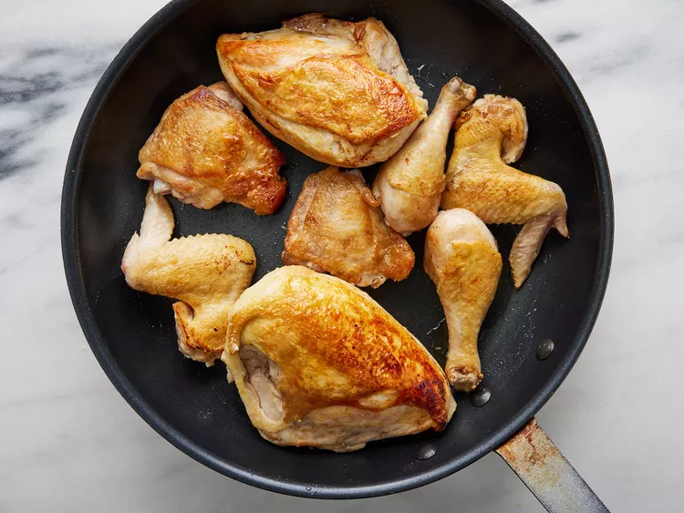
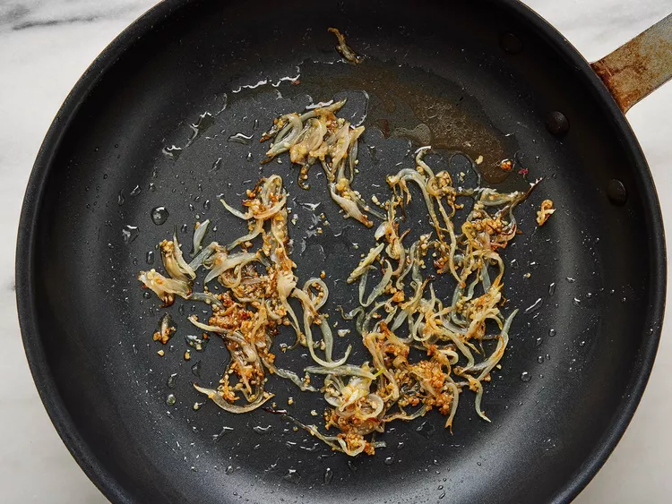
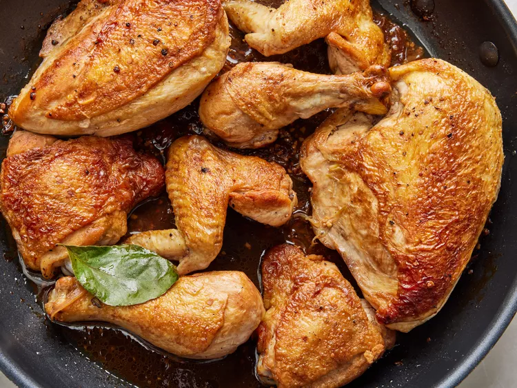

Chicken adobo is a classic Filipino dish that has been passed down from generation to generation. It is a simple dish to make, but it is also packed with flavor. The chicken is marinated in a mixture of soy sauce, vinegar, garlic, and peppercorns, which gives it a savory, tangy, and slightly spicy flavor. The chicken is then simmered until it is tender and juicy, and the sauce is reduced and thickened.
Chicken adobo is typically served with rice, but it can also be enjoyed with noodles or vegetables. It is a versatile dish that can be enjoyed for lunch, dinner, or even as a snack. Chicken adobo is a healthy and flavorful dish that is sure to please everyone at your table.
Heat vegetable oil in a large skillet over medium-high heat. Cook chicken pieces until golden brown, 2 to 3 minutes per side. Transfer chicken to a plate and set aside.
Add onion and garlic to the skillet; cook until softened and brown, about 6 minutes.
Pour in soy sauce and vinegar and season with garlic powder, black pepper, and bay leaf.
Return chicken to pan, increase heat to high, and bring to a boil. Reduce heat to medium-low, cover, and simmer until chicken is tender and cooked through, 35 to 40 minutes.
